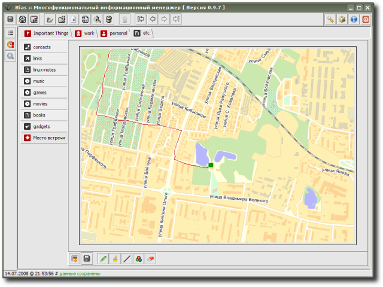

Graffiti - расширение для хранение изображений с очень простым встроенным графическим мини-редактором, в котором присутствуют лишь самые базовые инструменты для рисования (однако, естественно, присутствует возможность чтения/записи файлов основных графических форматов, таких как JPG/GIF/PNG и т.п.); подойдет для незамысловатых графических набросков и схемок “от руки”; также пригодится если нужно постоянно хранить в органайзере какой-либо графический файл и время от времени делать на нем некоторые пометки.
Расширение предоставлено Р. Касьяненко, автором приложения Bias.
Предварительный просмотр:
